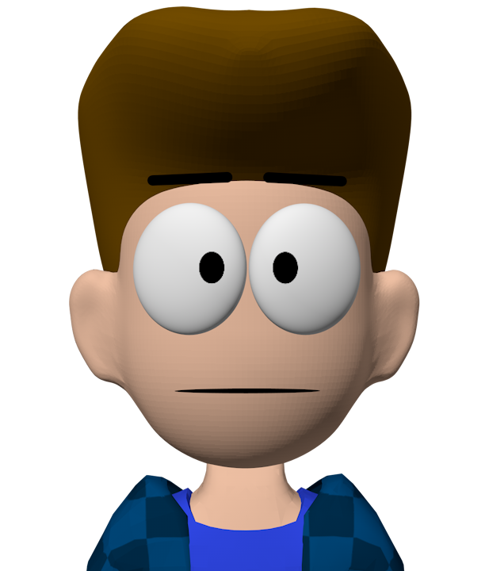

Welcome to TypeScript Test
This project will act as sandbox / example / template for me if I would ever want to do some TypeScript-based websites in the future!

This project will act as sandbox / example / template for me if I would ever want to do some TypeScript-based websites in the future!